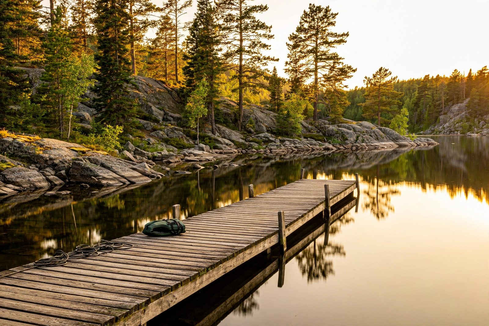

Ontario Parks explained: how the park system works for campers

Ontario's provincial park system has hundreds of parks, and the first thing a new camper learns is that they're not all the same. Some take reservations and have showers; some are a parking lot and a trailhead. Here's the general shape of the system so you know what you're looking at.
Operating vs. non-operating parks
This is the most important distinction. Operating parks have staff, maintained facilities, and services during their operating season — these are the parks with campgrounds, beaches, and visitor services. Non-operating parks are protected natural areas without facilities or staff: no campgrounds, no reservations, no services. If your goal is a serviced camping trip, you're looking at operating parks.
Park classes (the short version)
Parks are grouped by class, which roughly describes what they're for:
- Recreation-class parks are built around camping and day use — campgrounds, beaches, trails. This is what most people picture.
- Natural-environment and wilderness-class parks lean toward interior/backcountry camping: canoe routes, backcountry sites, fewer or no car-camping facilities.
- Nature reserves and other classes are primarily about protection, with minimal visitor facilities.
You don't need to memorize the classes — but when a park page describes itself as wilderness-class, that's your hint that it's a backcountry trip, not a car-camping weekend.
How reservations generally work
Campers reserve campsites through the park system's central reservation service, which opens bookings on a set schedule each year. A few things every first-timer should know:
- Popular parks book out fast. Prime weekends at well-known parks can fill within hours or days of the booking window opening. Set a reminder for the opening date.
- There are usually cancellation and change policies. Read them before you book — they spell out deadlines, penalties, and how far out you can modify a reservation.
- Day-use visits are separate. Some popular parks require advance day-use permits during peak periods; showing up without one can mean being turned away at the gate.
What's typically included (and what isn't)
At an operating park campground, your site reservation generally covers the campsite itself, access to shared facilities (toilets, water, trails), and entry to the park for the duration of your stay. It usually does not include firewood, equipment rentals, or programs — those are separate where they're available at all. And fees vary by park, season, and site type; check the current fee schedule rather than relying on someone's blog post from three years ago. (We're deliberately not quoting prices here — they change.)
Park rules are part of the deal
Provincial parks have consistent rules across the system, and they're enforced:
- Firewood movement restrictions exist to slow the spread of invasive pests — buy firewood at or near the park.
- Wildlife rules require proper food storage and prohibit feeding animals. In bear country, this is serious — a food-conditioned bear is a dangerous bear, and it's the campers who create the problem.
- Quiet hours, site occupancy limits, and checkout times are standard. Check-in and check-out times matter because staff turn sites over between guests.
- Alcohol and cannabis policies apply as posted; don't assume.
Beyond provincial parks
Ontario Parks is just one option. National parks in Ontario (like the ones around the Great Lakes) are run federally with their own reservation system and rules. Conservation areas, run by regional conservation authorities, offer camping at some locations — often closer to cities and less crowded than the famous provincial parks. Municipal and private campgrounds fill the gaps with everything from full-hookup RV resorts to simple family sites. If the provincial parks are booked solid, these alternatives are worth a look.
The system looks complicated from the outside, but it's really just: pick operating parks for car camping, book early for popular ones, read the rules, and don't trust old price lists. Everything else is details.